Keyword Spotting (KWS)
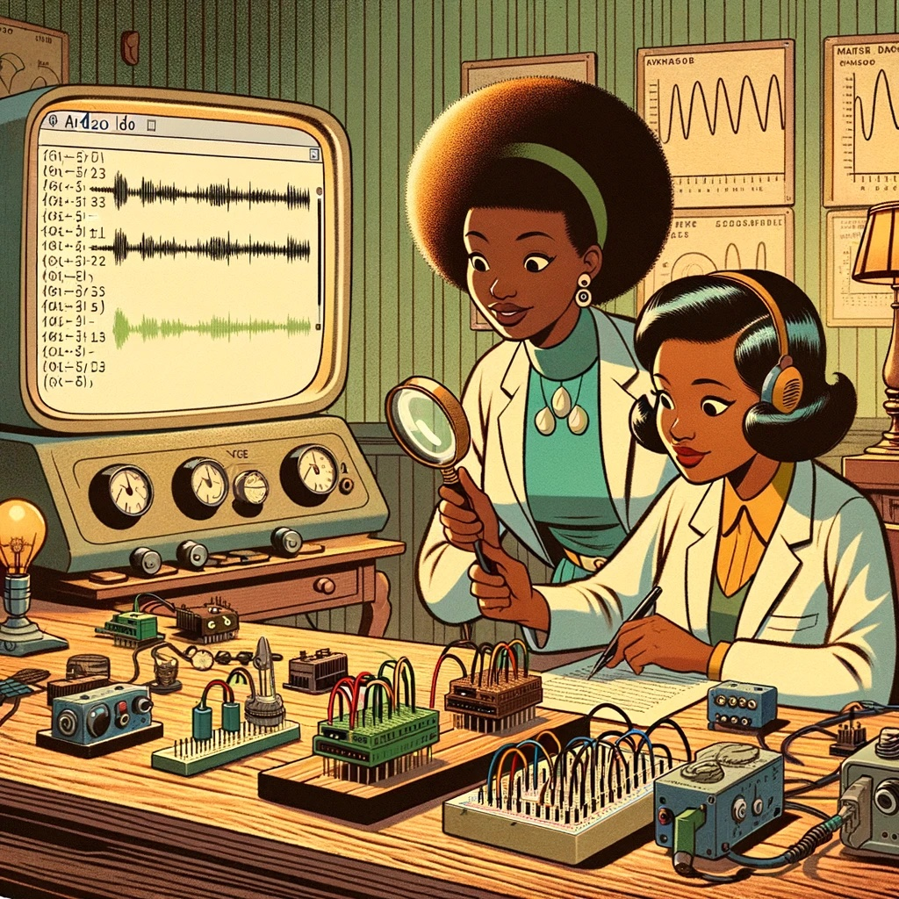
Introduction
Having already explored the Nicla Vision board in the Image Classification and Object Detection applications, we are now shifting our focus to voice-activated applications with a project on Keyword Spotting (KWS).
As introduced in the Feature Engineering for Audio Classification Hands-On tutorial, Keyword Spotting (KWS) is integrated into many voice recognition systems, enabling devices to respond to specific words or phrases. While this technology underpins popular devices like Google Assistant or Amazon Alexa, it’s equally applicable and feasible on smaller, low-power devices. This tutorial will guide you through implementing a KWS system using TinyML on the Nicla Vision development board equipped with a digital microphone.
Our model will be designed to recognize keywords that can trigger device wake-up or specific actions, bringing them to life with voice-activated commands.
How does a voice assistant work?
As said, voice assistants on the market, like Google Home or Amazon Echo-Dot, only react to humans when they are “waked up” by particular keywords such as ” Hey Google” on the first one and “Alexa” on the second.
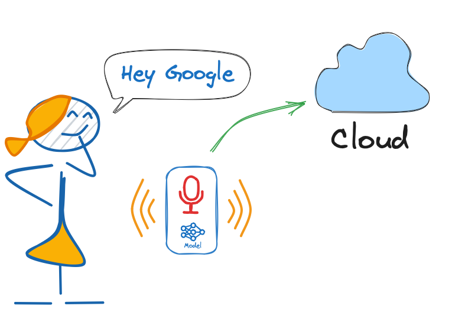
In other words, recognizing voice commands is based on a multi-stage model or Cascade Detection.
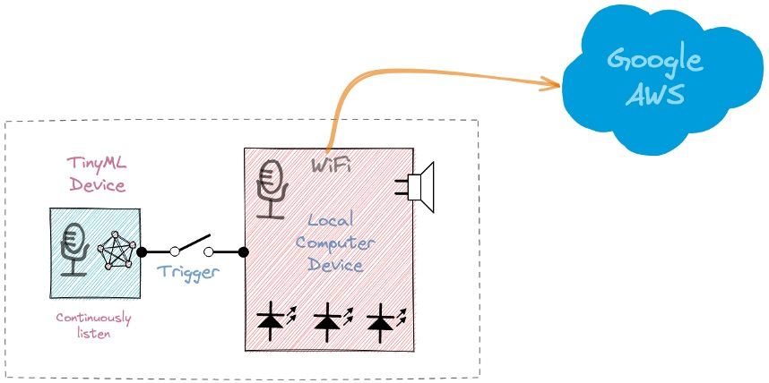
Stage 1: A small microprocessor inside the Echo Dot or Google Home continuously listens, waiting for the keyword to be spotted, using a TinyML model at the edge (KWS application).
Stage 2: Only when triggered by the KWS application on Stage 1 is the data sent to the cloud and processed on a larger model.
The video below shows an example of a Google Assistant being programmed on a Raspberry Pi (Stage 2), with an Arduino Nano 33 BLE as the TinyML device (Stage 1).
To explore the above Google Assistant project, please see the tutorial: Building an Intelligent Voice Assistant From Scratch.
In this KWS project, we will focus on Stage 1 (KWS or Keyword Spotting), where we will use the Nicla Vision, which has a digital microphone that will be used to spot the keyword.
The KWS Hands-On Project
The diagram below gives an idea of how the final KWS application should work (during inference):
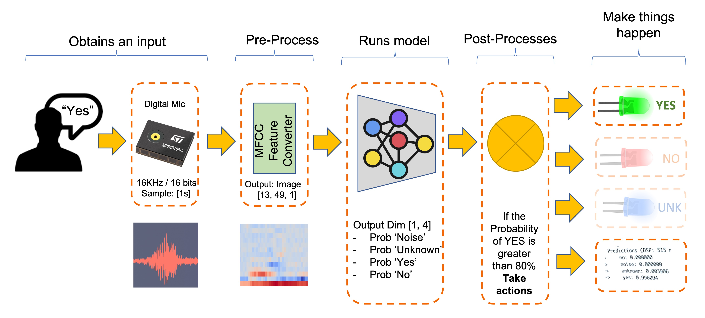
Our KWS application will recognize four classes of sound:
- YES (Keyword 1)
- NO (Keyword 2)
- NOISE (no words spoken; only background noise is present)
- UNKNOW (a mix of different words than YES and NO)
For real-world projects, it is always advisable to include other sounds besides the keywords, such as “Noise” (or Background) and “Unknown.”
The Machine Learning workflow
The main component of the KWS application is its model. So, we must train such a model with our specific keywords, noise, and other words (the “unknown”):
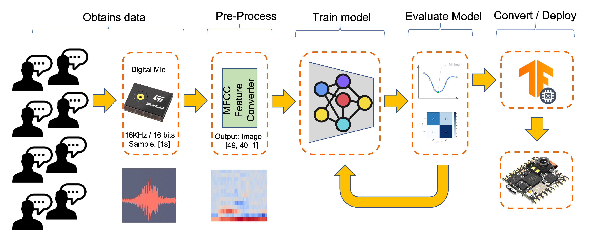
Dataset
The critical component of any Machine Learning Workflow is the dataset. Once we have decided on specific keywords, in our case (YES and NO), we can take advantage of the dataset developed by Pete Warden, “Speech Commands: A Dataset for Limited-Vocabulary Speech Recognition.” This dataset has 35 keywords (with +1,000 samples each), such as yes, no, stop, and go. In words such as yes and no, we can get 1,500 samples.
You can download a small portion of the dataset from Edge Studio (Keyword spotting pre-built dataset), which includes samples from the four classes we will use in this project: yes, no, noise, and background. For this, follow the steps below:
- Download the keywords dataset.
- Unzip the file to a location of your choice.
Uploading the dataset to the Edge Impulse Studio
Initiate a new project at Edge Impulse Studio (EIS) and select the Upload Existing Data tool in the Data Acquisition section. Choose the files to be uploaded:

Define the Label, select Automatically split between train and test, and Upload data to the EIS. Repeat for all classes.
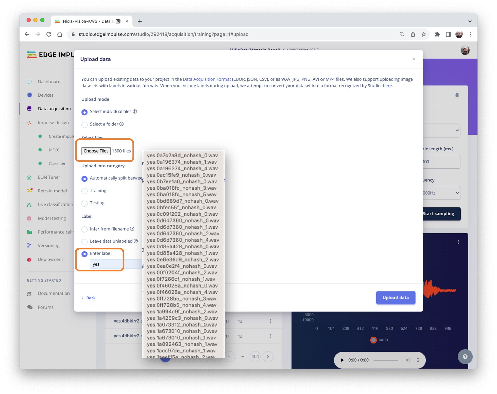
The dataset will now appear in the Data acquisition section. Note that the approximately 6,000 samples (1,500 for each class) are split into Train (4,800) and Test (1,200) sets.
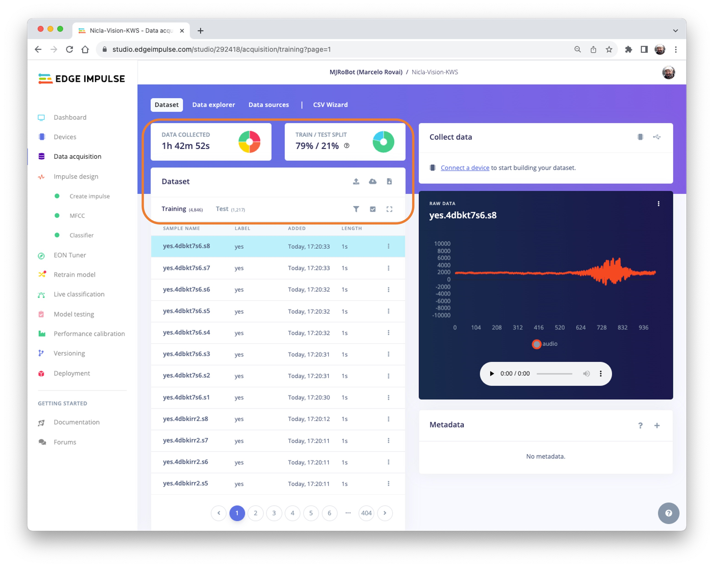
Capturing additional Audio Data
Although we have a lot of data from Pete’s dataset, collecting some words spoken by us is advised. When working with accelerometers, creating a dataset with data captured by the same type of sensor is essential. In the case of sound, this is optional because what we will classify is, in reality, audio data.
The key difference between sound and audio is the type of energy. Sound is mechanical perturbation (longitudinal sound waves) that propagate through a medium, causing variations of pressure in it. Audio is an electrical (analog or digital) signal representing sound.
When we pronounce a keyword, the sound waves should be converted to audio data. The conversion should be done by sampling the signal generated by the microphone at a 16KHz frequency with 16-bit per sample amplitude.
So, any device that can generate audio data with this basic specification (16KHz/16bits) will work fine. As a device, we can use the NiclaV, a computer, or even your mobile phone.
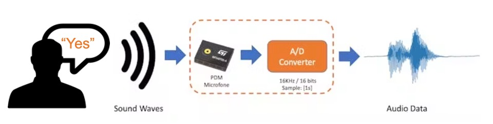
Using the NiclaV and the Edge Impulse Studio
As we learned in the chapter Setup Nicla Vision, EIS officially supports the Nicla Vision, which simplifies the capture of the data from its sensors, including the microphone. So, please create a new project on EIS and connect the Nicla to it, following these steps:
Download the last updated EIS Firmware and unzip it.
Open the zip file on your computer and select the uploader corresponding to your OS:
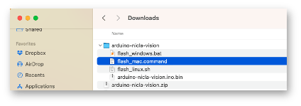
Put the NiclaV in Boot Mode by pressing the reset button twice.
Upload the binary arduino-nicla-vision.bin to your board by running the batch code corresponding to your OS.
Go to your project on EIS, and on the Data Acquisition tab, select WebUSB. A window will pop up; choose the option that shows that the Nicla is paired and press [Connect].
You can choose which sensor data to pick in the Collect Data section on the Data Acquisition tab. Select: Built-in microphone, define your label (for example, yes), the sampling Frequency[16000Hz], and the Sample length (in milliseconds), for example [10s]. Start sampling.
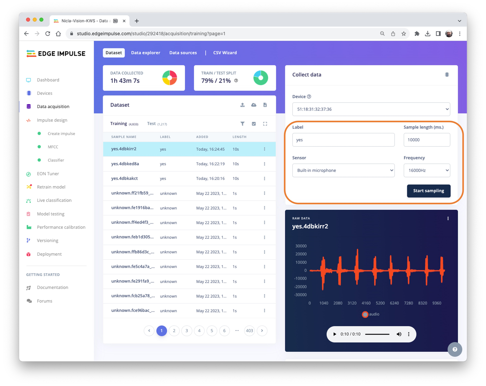
Data on Pete’s dataset have a length of 1s, but the recorded samples are 10s long and must be split into 1s samples. Click on three dots after the sample name and select Split sample.
A window will pop up with the Split tool.
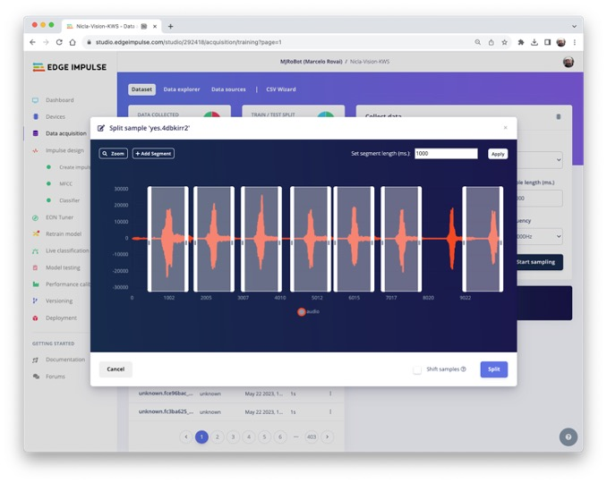
Once inside the tool, split the data into 1-second (1000 ms) records. If necessary, add or remove segments. This procedure should be repeated for all new samples.
Using a smartphone and the EI Studio
You can also use your PC or smartphone to capture audio data, using a sampling frequency of 16KHz and a bit depth of 16.
Go to Devices, scan the QR Code using your phone, and click on the link. A data Collection app will appear in your browser. Select Collecting Audio, and define your Label, data capture Length, and Category.
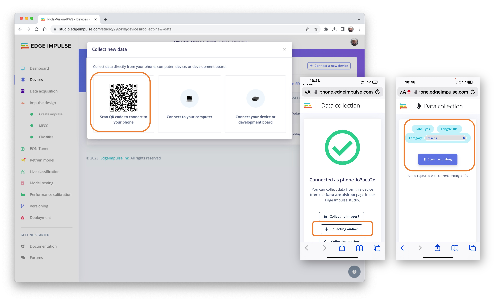
Repeat the same procedure used with the NiclaV.
Note that any app, such as Audacity, can be used for audio recording, provided you use 16KHz/16-bit depth samples.
Creating Impulse (Pre-Process / Model definition)
An impulse takes raw data, uses signal processing to extract features, and then uses a learning block to classify new data.
Impulse Design
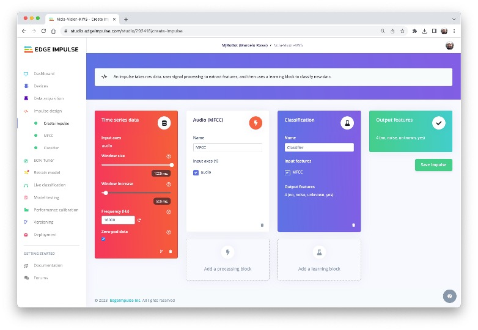
First, we will take the data points with a 1-second window, augmenting the data and sliding that window in 500ms intervals. Note that the option zero-pad data is set. It is essential to fill with ‘zeros’ samples smaller than 1 second (in some cases, some samples can result smaller than the 1000 ms window on the split tool to avoid noise and spikes).
Each 1-second audio sample should be pre-processed and converted to an image (for example, 13 x 49 x 1). As discussed in the Feature Engineering for Audio Classification Hands-On tutorial, we will use Audio (MFCC), which extracts features from audio signals using Mel Frequency Cepstral Coefficients, which are well suited for the human voice, our case here.
Next, we select the Classification block to build our model from scratch using a Convolution Neural Network (CNN).
Alternatively, you can use the
Transfer Learning (Keyword Spotting)block, which fine-tunes a pre-trained keyword spotting model on your data. This approach has good performance with relatively small keyword datasets.
Pre-Processing (MFCC)
The following step is to create the features to be trained in the next phase:
We could keep the default parameter values, but we will use the DSP Autotune parameters option.

We will take the Raw features (our 1-second, 16KHz sampled audio data) and use the MFCC processing block to calculate the Processed features. For every 16,000 raw features (16,000 x 1 second), we will get 637 processed features (13 x 49).
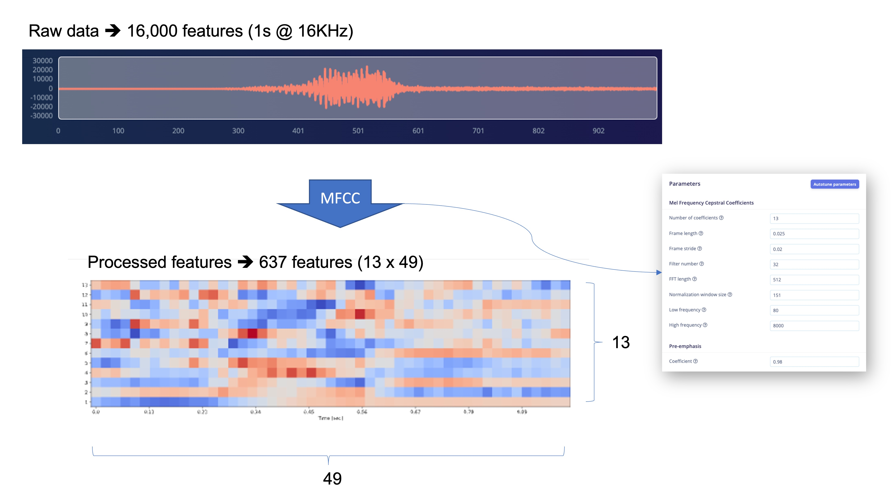
The result shows that we only used a small amount of memory to pre-process data (16KB) and a latency of 34ms, which is excellent. For example, on an Arduino Nano (Cortex-M4f @ 64MHz), the same pre-process will take around 480ms. The parameters chosen, such as the FFT length [512], will significantly impact the latency.
Now, let’s Save parameters and move to the Generated features tab, where the actual features will be generated. Using UMAP, a dimension reduction technique, the Feature explorer shows how the features are distributed on a two-dimensional plot.
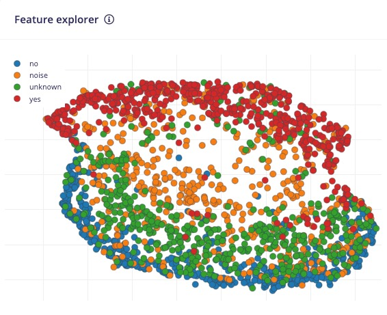
The result seems OK, with a visually clear separation between yes features (in red) and no features (in blue). The unknown features seem nearer to the no space than the yes. This suggests that the keyword no has more propensity to false positives.
Going under the hood
To understand better how the raw sound is preprocessed, look at the Feature Engineering for Audio Classification chapter. You can play with the MFCC features generation by downloading this notebook from GitHub or [Opening it In Colab]
Model Design and Training
We will use a simple Convolution Neural Network (CNN) model, tested with 1D and 2D convolutions. The basic architecture has two blocks of Convolution + MaxPooling ([8] and [16] filters, respectively) and a Dropout of [0.25] for the 1D and [0.5] for the 2D. For the last layer, after Flattening, we have [4] neurons, one for each class:
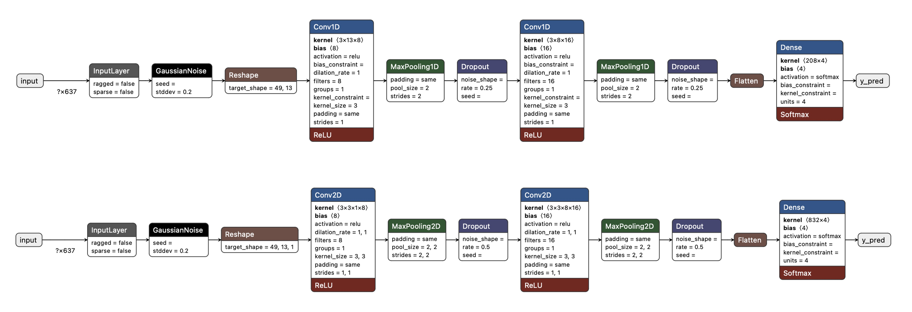
As hyper-parameters, we will have a Learning Rate of [0.005] and a model trained by [100] epochs. We will also include a data augmentation method based on SpecAugment. We trained the 1D and the 2D models with the same hyperparameters. The 1D architecture had a better overall result (90.5% accuracy when compared with 88% of the 2D, so we will use the 1D.
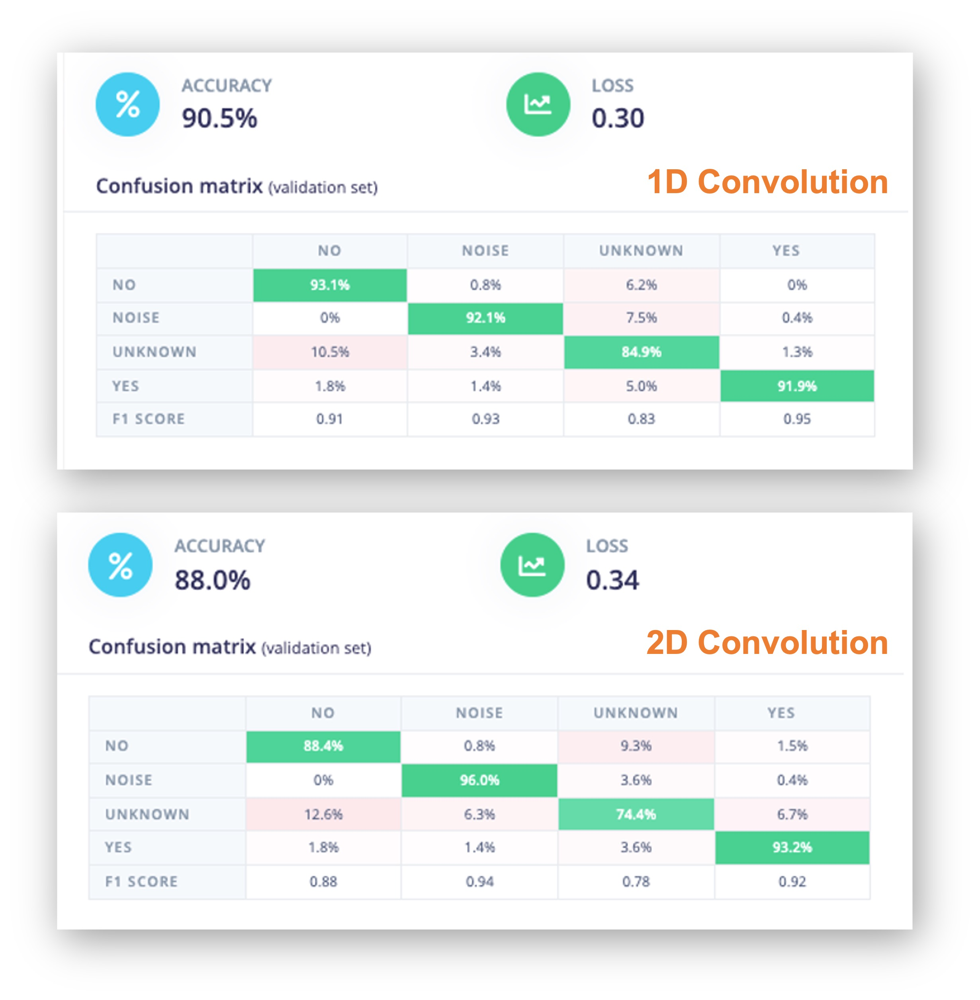
Using 1D convolutions is more efficient because it requires fewer parameters than 2D convolutions, making them more suitable for resource-constrained environments.
It is also interesting to pay attention to the 1D Confusion Matrix. The F1 Score for yes is 95%, and for no, 91%. That was expected by what we saw with the Feature Explorer (no and unknown at close distance). In trying to improve the result, you can inspect closely the results of the samples with an error.
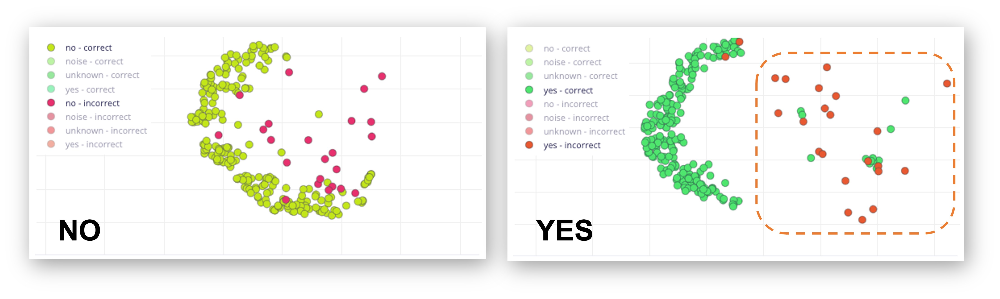
Listen to the samples that went wrong. For example, for yes, most of the mistakes were related to a yes pronounced as “yeh”. You can acquire additional samples and then retrain your model.
Going under the hood
If you want to understand what is happening “under the hood,” you can download the pre-processed dataset (MFCC training data) from the Dashboard tab and run this Jupyter Notebook, playing with the code or [Opening it In Colab]. For example, you can analyze the accuracy by each epoch:
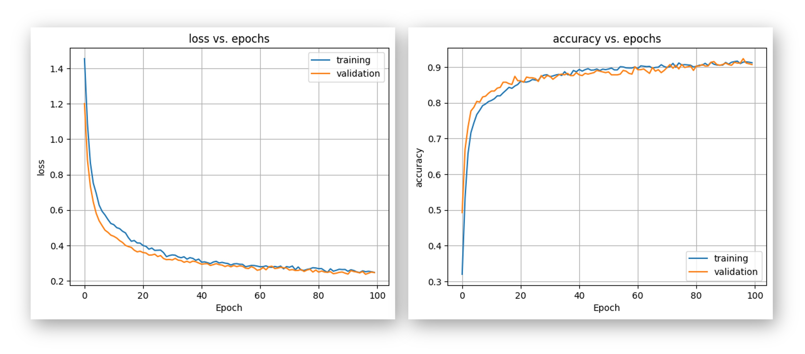
Testing
Testing the model with the data reserved for training (Test Data), we got an accuracy of approximately 76%.
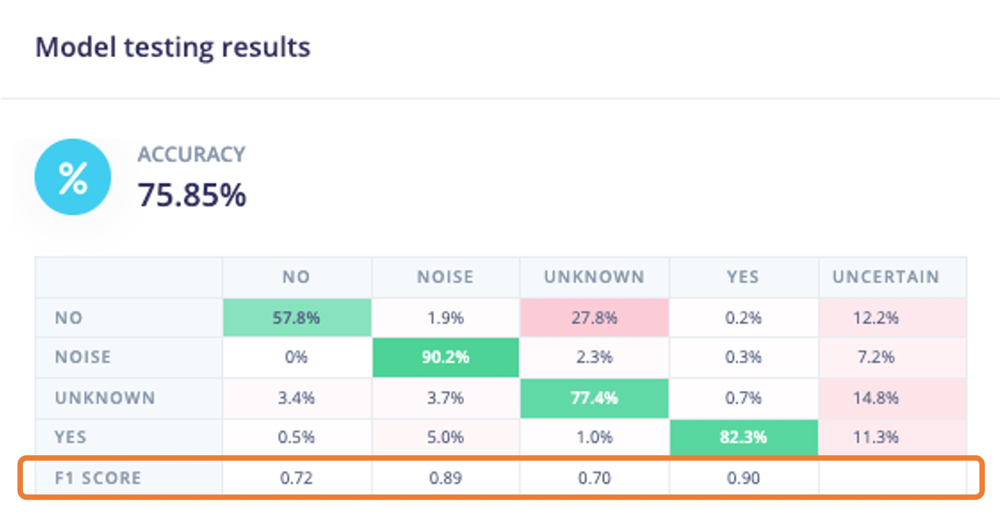
Inspecting the F1 score, we can see that for YES, we got 0.90, an excellent result since we expect to use this keyword as the primary “trigger” for our KWS project. The worst result (0.70) is for UNKNOWN, which is OK.
For NO, we got 0.72, which was expected, but to improve this result, we can move the samples that were not correctly classified to the training dataset and then repeat the training process.
Live Classification
We can proceed to the project’s next step but also consider that it is possible to perform Live Classification using the NiclaV or a smartphone to capture live samples, testing the trained model before deployment on our device.
Deploy and Inference
The EIS will package all the needed libraries, preprocessing functions, and trained models, downloading them to your computer. Go to the Deployment section, select Arduino Library, and at the bottom, choose Quantized (Int8) and press Build.
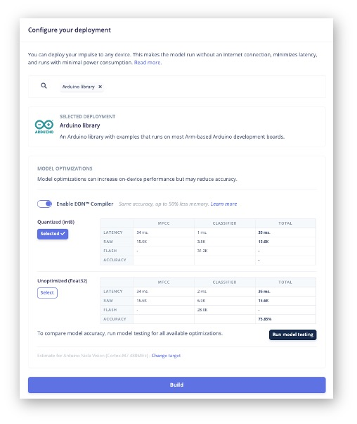
When the Build button is selected, a zip file will be created and downloaded to your computer. On your Arduino IDE, go to the Sketch tab, select the option Add .ZIP Library, and Choose the .zip file downloaded by EIS:
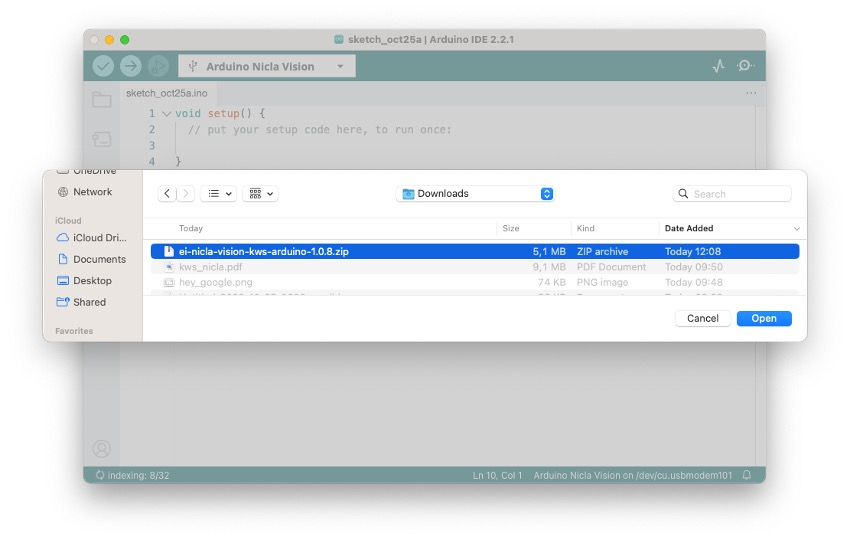
Now, it is time for a real test. We will make inferences while completely disconnected from the EIS. Let’s use the NiclaV code example created when we deployed the Arduino Library.
In your Arduino IDE, go to the File/Examples tab, look for your project, and select nicla-vision/nicla-vision_microphone (or nicla-vision_microphone_continuous)
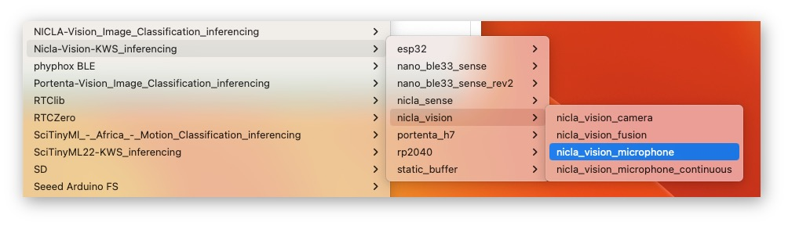
Press the reset button twice to put the NiclaV in boot mode, upload the sketch to your board, and test some real inferences:
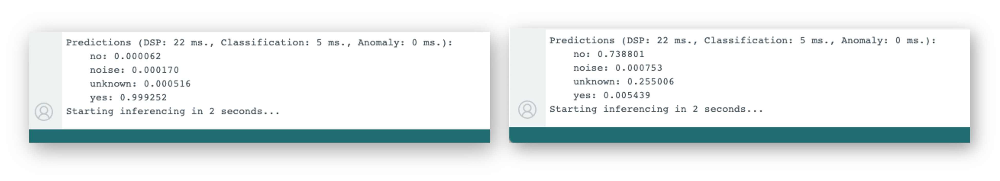
Post-processing
Now that we know the model is working since it detects our keywords, let’s modify the code to see the result with the NiclaV completely offline (disconnected from the PC and powered by a battery, a power bank, or an independent 5V power supply).
The idea is that whenever the keyword YES is detected, the Green LED will light; if a NO is heard, the Red LED will light, if it is a UNKNOW, the Blue LED will light; and in the presence of noise (No Keyword), the LEDs will be OFF.
We should modify one of the code examples. Let’s do it now with the nicla-vision_microphone_continuous.
Start with initializing the LEDs:
...
void setup()
{
// Once you finish debugging your code, you can comment or delete the Serial part of the code
Serial.begin(115200);
while (!Serial);
Serial.println("Inferencing - Nicla Vision KWS with LEDs");
// Pins for the built-in RGB LEDs on the Arduino NiclaV
pinMode(LEDR, OUTPUT);
pinMode(LEDG, OUTPUT);
pinMode(LEDB, OUTPUT);
// Ensure the LEDs are OFF by default.
// Note: The RGB LEDs on the Arduino Nicla Vision
// are ON when the pin is LOW, OFF when HIGH.
digitalWrite(LEDR, HIGH);
digitalWrite(LEDG, HIGH);
digitalWrite(LEDB, HIGH);
...
}Create two functions, turn_off_leds() function , to turn off all RGB LEDs
**
* @brief turn_off_leds function - turn-off all RGB LEDs
*/
void turn_off_leds(){
digitalWrite(LEDR, HIGH);
digitalWrite(LEDG, HIGH);
digitalWrite(LEDB, HIGH);
}Another turn_on_led() function is used to turn on the RGB LEDs according to the most probable result of the classifier.
/**
* @brief turn_on_leds function used to turn on the RGB LEDs
* @param[in] pred_index
* no: [0] ==> Red ON
* noise: [1] ==> ALL OFF
* unknown: [2] ==> Blue ON
* Yes: [3] ==> Green ON
*/
void turn_on_leds(int pred_index) {
switch (pred_index)
{
case 0:
turn_off_leds();
digitalWrite(LEDR, LOW);
break;
case 1:
turn_off_leds();
break;
case 2:
turn_off_leds();
digitalWrite(LEDB, LOW);
break;
case 3:
turn_off_leds();
digitalWrite(LEDG, LOW);
break;
}
}And change the // print the predictions portion of the code on loop():
...
if (++print_results >= (EI_CLASSIFIER_SLICES_PER_MODEL_WINDOW)) {
// print the predictions
ei_printf("Predictions ");
ei_printf("(DSP: %d ms., Classification: %d ms., Anomaly: %d ms.)",
result.timing.dsp, result.timing.classification, result.timing.anomaly);
ei_printf(": \n");
int pred_index = 0; // Initialize pred_index
float pred_value = 0; // Initialize pred_value
for (size_t ix = 0; ix < EI_CLASSIFIER_LABEL_COUNT; ix++) {
if (result.classification[ix].value > pred_value){
pred_index = ix;
pred_value = result.classification[ix].value;
}
// ei_printf(" %s: ", result.classification[ix].label);
// ei_printf_float(result.classification[ix].value);
// ei_printf("\n");
}
ei_printf(" PREDICTION: ==> %s with probability %.2f\n",
result.classification[pred_index].label, pred_value);
turn_on_leds (pred_index);
#if EI_CLASSIFIER_HAS_ANOMALY == 1
ei_printf(" anomaly score: ");
ei_printf_float(result.anomaly);
ei_printf("\n");
#endif
print_results = 0;
}
}
...You can find the complete code on the project’s GitHub.
Upload the sketch to your board and test some real inferences. The idea is that the Green LED will be ON whenever the keyword YES is detected, the Red will lit for a NO, and any other word will turn on the Blue LED. All the LEDs should be off if silence or background noise is present. Remember that the same procedure can “trigger” an external device to perform a desired action instead of turning on an LED, as we saw in the introduction.
Conclusion
You will find the notebooks and codes used in this hands-on tutorial on the GitHub repository.
Before we finish, consider that Sound Classification is more than just voice. For example, you can develop TinyML projects around sound in several areas, such as:
- Security (Broken Glass detection, Gunshot)
- Industry (Anomaly Detection)
- Medical (Snore, Cough, Pulmonary diseases)
- Nature (Beehive control, insect sound, pouching mitigation)